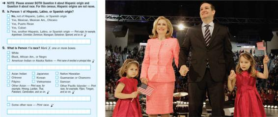

Basic Concepts Understand the differing meanings of the terms race and ethnicity. Understand why race is a highly contested concept.
Thinking About Racism Learn several key concepts that are important for understanding racism in the contemporary United States: color-blind racism, White privilege, institutional racism, overt racism, and microaggressions.
Race and Racism in Historical and Comparative Perspective Familiarize yourself with the history and social dimensions of ethnic relations in the United States. Recognize the importance of the historical roots of ethnic conflict, particularly in the expansion of Western colonialism. Understand the different models for a multiethnic society.
Unanswered Questions Understand the current state of immigration to the United States. Learn the forms of inequality experienced by different racial and ethnic groups in the United States.
Donald Trump was elected into office in part by working-class White voters who were largely victims of an economy that had outsourced millions of jobs and lost others to computerization. Many of these voters did not blame their troubles on economic transformations, however, but instead on the idea that non-Whites were increasingly taking their jobs and controlling the country.
You have no doubt heard the same message that many of these anxious White voters heard in the years leading up to the presidential election—that America is moving in the direction of what is called a “majority-minority” nation. By this, sociologists mean a country in which non-Hispanic Whites will no longer be in the majority; a nation in which non-Whites will be in the majority. The conventional wisdom, including projections by the U.S. Census Bureau, suggests that this is what is happening. Thus, the answer is b: According to the U.S. Census, Whites will no longer be a majority in the United States by 2044.
The Census Bureau is the official U.S. government agency for counting Americans. Ever since 1790, the Census Bureau has classified the population by race, and the way it has done so powerfully illustrates that race is not a biological reality, but rather a social and political construction. For the first century and a half of the census, these classifications were done by census workers who determined the race of a person by sight. Such classifications, no doubt, were quite arbitrary and often inaccurate. In 1960, the census moved to a system in which the people being counted self-reported their own race by choosing among predetermined categories.
Over the history of the census, the specific racial categories used have undergone major changes, illustrating that categories we take to be natural in one era are actually socially constructed. This concept is illustrated by the way in which categories vary over time. People from South Asia were long classified as White in the census, for example, but by the 1980s, were reclassified as Asian. Mexicans were classified as White in the nineteenth century, as non-White in the 1930s, again as White in the 1940s, and then as Hispanic in the 1970s, all depending on demands for labor and the amount of prejudice in the country at a given moment. Today, there are ongoing debates about whether people from parts of the Middle East should continue to be classified as White since many are not seen by themselves or others in that way.
Racial categories themselves also go in and out of fashion. In the 1890 census, “quadroon” was the racial category for people who were a quarter Black, and “octoroon” was the racial category for people who were one-eighth Black. Ten years later, those categories were eliminated, and a new all-encompassing “Negro” category was added to the census. In 1970, “Negro or Black” was added to the census, and by 2000, the category was “Black, African American, or Negro.” In 2013, the Census Bureau stopped using the category “Negro” because many respondents found it offensive; an older generation that identified with that term has largely passed on.
In 2016, sociologist Richard Alba published an article that challenged conventional wisdom on census classifications of White and non-White. He pointed out that the Census Bureau’s way of classifying individuals by ethnicity and race yields the lowest possible estimate of the non-Hispanic White population. This is because children with one parent who is Asian, Hispanic, or Black are always counted as a minority. This, according to Alba, is basically an extension of the “one drop” rule that has always classified people as Black if they have some Black ancestry (Alba, 2016).
(left) The Census Bureau classifies individuals with one parent who is Asian, Black, or Hispanic as a member of that minority group. (right) According to the U.S. Census, Heidi Nelson Cruz is the only White person in the Cruz household. Some sociologists question whether this reflects the lived experiences of mixed-race families.
Consider the example of Senator Ted Cruz of Texas, who is classified as Hispanic since his ancestors came from Cuba. His wife, Heidi Nelson Cruz, is White and blond, and their two children also appear White and blond. Nevertheless, the only person in the Cruz household who would be classified as White by the Census Bureau is Heidi. But what if the United States were to move to the other extreme: to count anyone with one White parent as White? Under that assumption, Whites would remain three-quarters of the U.S. population by mid-century. The interesting sociological question is, Which assumption fits better with the lived experience of mixed-race people?
Four schoolboys represent the “racial scale” in South Africa: Black, Indian, half-caste, and White.
According to Alba, the household incomes of mixed-race people tend to be closer to the White median income than to that of minorities. Likewise, many mixed-race people—such as those who are both Asian and White—tend to self-identify as White. While this tends not to be the case for those with Black ancestry, it is indeed the direction of identification to be found in many other partially White people. Alba also argues that for people who are partly minority and partly White, there is a greater tendency to choose a White marriage partner, which means that their children will tend to live in White neighborhoods and identify as White. For all these reasons, Alba argues, many mixed-race people will self-identify with the majority. It is, therefore, a mistake to take it for granted that America is becoming a “majority-minority” country.
Alba’s ideas are consistent with the sociological understanding of the term minority as not simply a numerical category. There are many minorities in a numerical or statistical sense, such as people with red hair or people who weigh more than 250 pounds, but these are not minorities according to the sociological concept. In sociology, members of a minority group are disadvantaged as compared to the dominant group (a group possessing more wealth, power, and prestige) and thus have some sense of group solidarity. Subjection to prejudice and discrimination usually heightens feelings of common loyalty and interests.
Members of minority groups, such as Spanish speakers in the United States, often see themselves as distinct from the majority. Although members of minority groups tend to live in certain neighborhoods, cities, or regions of a country, their children often intermarry with members of the dominant group. Thus, future generations that the Census Bureau assumes will identify as minority may not experience the cultural distinctiveness or disadvantages that are today associated with the very idea of a minority group.